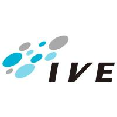

![]()
Charles Poon
Software Developer in Hong Kong
Results-oriented full-stack programmer with 2+ years experience developing, testing, and maintaining website and applications. Investigated new technologies and put into application elegantly to make sure that HKTVmall remained the leader in industry.
Tech Stack
Java
Maven, NPM, Yarn
Spring, Spring Boot, JSP
JUnit, Mockito, VisualVM, Selenium
JavaScript
NPM / Yarn, PM2
Node.js, React, Angular, Babel, Webpack
jQuery, Bootstrap
MySQL, Oracle, SQLite, MongoDB, H2
EhCache, Redis
RabbitMQ
Python (OpenCV, Numpy, Google App Engine)
SVN, Git (GitHub, GitLab)
Docker
Jenkins
Workplace Skills
Problem solvingEager to complete tasks with professional knowledge
CreativityWilling to improve and use new techniques, either on products or personal knowledge
Critical thinkingDiligent to solve problems in a most efficient and elegant way
CollaborationSelf-initiated and work well with team members
Self-managementAble to work under pressure with tight schedule
Experience
Hong Kong Television Network Limited
Programmer II
Duties
Gather requirements, study for enhancements and co-operate with parties under agile lifecycle
Maintain existing sub-systems to communicate with core system
Development of new features: reliable, durable against inter-system errors
Projects
Physical Store Operation Support system
O2O Store POS (backend)
The Hong Kong Economics Times Limited
Developer
Duties
Research, develop and integrate front/back-end projects into legacy system modules
Research and practise in automation of daily routines
Participating in daily health check and in-house minor jobs (bug-fix/enhancement)
Assist in urgent cases

Driving Simulator Development Project Office, Vocational Training Council
Junior Programmer (Part-time)
Duties
Development of customised GUI of version control component for video records
Modules testing
Education
Bachelor of Science (Honours) in Computer Science
Hong Kong Baptist University
Higher Diploma in Software Engineering
Hong Kong Institute of Vocational Education (Lee Wai Lee)
Language
Cantonese (Native)
English (Proficient)
Mandarin (Proficient)